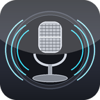

Live wireless microphone streamer to PC/Mac (AndroidMic compatible) for iOS 5–10
MicRemote streams live audio directly from your iOS device's microphone to your PC or Mac over Wi-Fi without saving any audio files on the device. Fully compatible with the open-source AndroidMic desktop receiver (TCP/UDP port 54345), raw low-latency PCM over UDP/TCP, and a built-in zero-install HTTP live WAV server playable in VLC or any browser.
Unofficial apps by samcejko, not affiliated with or endorsed by Twitch, Google, Apple, TikTok, Instagram, Meta, Spotify, Kick, NVIDIA, Mojang, Microsoft, OpenRouter, Vine, X, diVine or the Moonlight, Sunshine and Apollo projects.